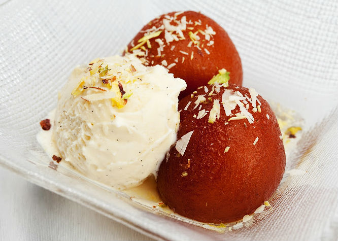
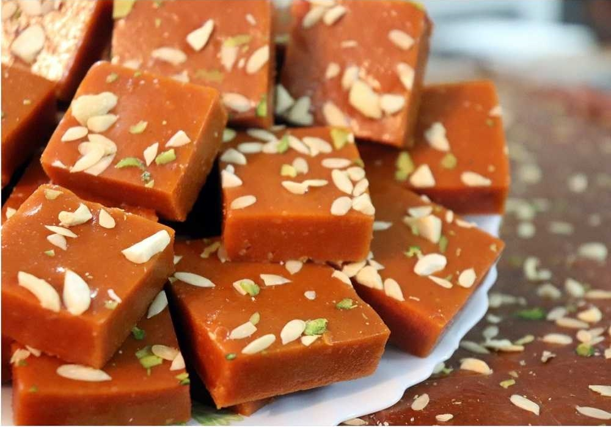

Gulab Jamun
Ingredients
- 1/2 tin Nestlé MILKMAID
- 2 cups (200 gm) Flour
- 600 gms Grated Paneer
- 200 gm Sooji/Rava
- 1½ tsp Baking Powder
- 1½ tsp Baking Soda
- For Frying Oil
- 2 litres Water
- 1 kg Sugar
- 6-8 nos Coarsely Crushed Cardamom
Recipe
- Boil sugar and water to prepare syrup remove from fire. Add cardamom and keep aside to cool.
- In a mixing bowl put the flour, paneer, sooji, Nestlé MILKMAID, baking powder and baking soda. Mix gently to make a soft dough. Do not knead too much.
- Divide the mixture into 30-35 portions and gently roll into round gulab jamuns. Fry in the oil at very low flame till golden brown in color.
- Keep putting the fried gulab jamuns in the prepared sugar syrup. Once all the gulab jamuns are in the sugar syrup bring it to a boil and remove from flame.
- Serve warm.

Barfi
Ingredients
- 1/2 tin Nestlé MILKMAID
- 1/2 cup Nestlé a+ Toned Milk
- 150 gms Kaju (Cashew nuts)
- 150 gms Khoya
- 50 gms Maida (All Purpose Flour)
Recipe
- Choose fresh and whole cashews to ensure the best flavour and texture of your Kaju Katli.
- Make sure not to over-grind, as this can release the oils from the nuts and affect the texture of the final product.
- When using condensed milk, make sure to cook the cashew mixture on low heat. Stir continuously to prevent it from sticking to the bottom of the pan and burning.
- Roll out the dough evenly into a thin layer using a greased rolling pin. Cut the Kaju Katli into diamond or square-shaped pieces while it is still warm.
